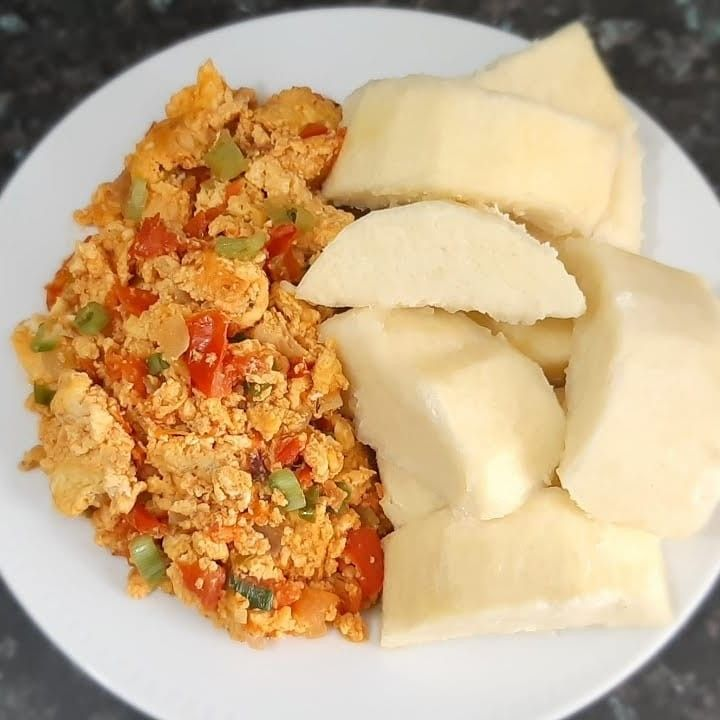
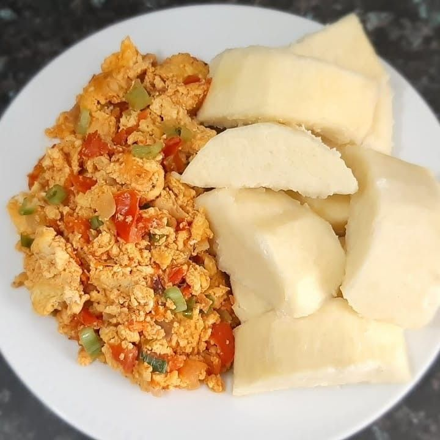

Jellof Rice
Nigerian food, like many cuisines in West Africa, is known for being
spicy and aromatic. Jollof rice is perhaps the most famous Nigerian dish
but the cuisine has so much more to offer, especially with its abundance
of richly flavored soups and stews and equally plentiful “swallow”
foods. Unfortunately, Nigerian food isn’t as well-known globally as
other cuisines but thanks to the Nigerian diaspora, that may be
changing. Nigerian recipe bloggers, many of whom have moved to different
parts of the world, continue to champion Nigerian cuisine and help bring
it into the global consciousness.

Ingredients for Jellof Rice:
- 4 cups Rice
- 1Kg Chicken/Beef
- 1000ml of Ground Fresh Tomatoes
- 50ml Ground Fresh Peppers
- 1 Teaspoon Curry powder
- 1 teaspoon Thyme
- 1 teaspoon Nutmeg powder
- 2 seasoning cubes
- 1 cup of sliced onions
- 300ml vegetable
- salt to taste.
- 2 cloves of garlic
- 2 fingers of ginger
Click Here to know more about the preparation
Egwusi Soup
Egusi soup and fufu are two iconic dishes in Nigerian cuisine. The rich
and flavorful egusi soup, made from ground melon seeds, is a staple in
many Nigerian households. Fufu, on the other hand, is a soft and doughy
accompaniment made from cassava or plantain flour. Together, they create
a mouthwatering combination that is enjoyed by food lovers worldwide.
 - Dream Africa.jpg)
Ingredients for Egusi Soup:
- 2 cup of egusi seeds (Melon Seeds)
- 1 kg of meat (beef, chicken, or goat)
- 1 kg of fish (optional)
-
2 cups of chopped vegetables (spinach, bitter leaf, or pumpkin leaves)
- 1 onion, chopped
- 3-4 medium-sized tomatoes, blended
- 2 Scotch bonnet peppers, chopped
- 2 tablespoons of palm oil
- 1-2 tablespoons of ground crayfish
- Stock cubes or seasoning powder, to taste
- Salt, to taste
- Water, as needed
Ingredients for Fufu:
- 2 cups of cassava or plantain flour
- Water, as needed
- Salt, to taste
Efo Riro (Spinach Soup)
Efo riro (or spinach soup) is a vegetable meal native to the Yoruba
ethnic group of Western Nigeria and is prepared with ṣọ́kọ́ yòkòtò
(Celosia argentea leaf), or ẹ̀fọ́ tẹ̀tẹ̀ (Amaranthus hybridus leaf). You may
prepare both in the same way. The first step in preparing efo riro is to
boil the leaves. Afterward, you fry the red oil and introduce pepper and
other ingredients; the vegetable is often added towards the end of the
cooking process. The taste of efo riro after the preparation depends on
how well it’s cooked and how good the ingredients are. Efo riro’s main
ingredients are fresh ground pepper, palm oil, onion, salt, seasoning,
fish, meat, ponmo, stockfish, crayfish, and others.

Nutritional fact per 240 g serving
- Calories: 74 kcal
- Fat: 2.4 g
- Carb: 7.1 g
- Protein: 7.2 g
 
